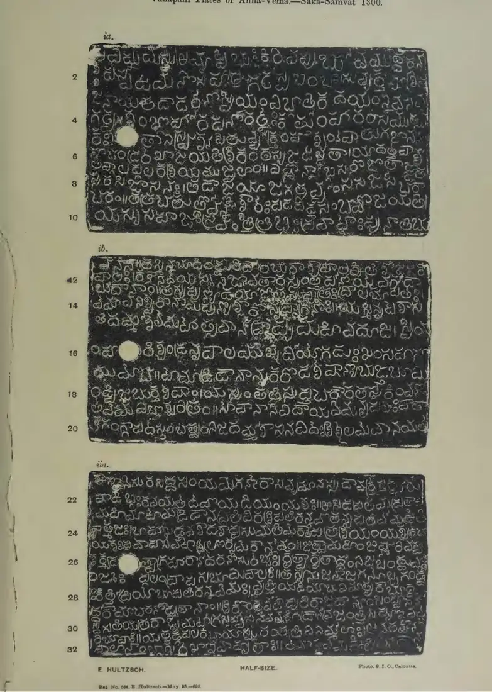

Vânapalli plates of Anna-Vêma ; Śaka-Saṁvat 1300
VANAPALLI PLATES OF ANNA-VEMA.— SAKA-SAMVAT 1300.
The original of this inscription was “found by a workman while excavating some earth in an old site” in the village of Vanapalli in the Amalâpuram tâlukâ of the Gôdâvarî district. The find came to the notice of Mr. P. V. S. Gopalam, Pleader, Cocanada, who reported it to the Superintendent, Archæological Survey, Madras, on the 23rd May 1892. The plates were subsequently presented to Government by their owner, Vissapragada Krishnayya, and are now deposited in the Madras Museum.
The inscription is engraved on three copper-plates of by inches. The rims are slightly raised for the protection of the writing. The preservation of the plates is fairly good; on plates i.b, ii.b, and iii.a, some letters are partially eaten away by verdigris. The three plates are strung on a copper ring, which measures about inches in diameter, and about inch in thickness. It is not soldered and can be detached from the plates by bending it asunder. Instead of the usual seal, the ring bears a well-carved recumbent figure of the sacred bull Nandi, which is about inch long, and placed on a plain pedestal.— The alphabet of the inscription is Telugu, and the language Sanskrit. With the exception of a few words in lines 1, 49, 53, 57 f. and 65, the whole of the text is in verse. The signature of the king at the end of the document is in the Telugu language.— As regards orthography, the writer of the inscription follows the same system which is observed in other inscriptions from the Telugu and Kanarese countries. Thus, dhdh is written instead of ddh, if the letter dh is doubled either after r (e.g. in ardhdha for ardha, l. 47) or through samdhi (e.g. in sidhdha for siddha, l. 21, and udhdharan for uddharan, l. 1). Similarly, chchch takes the place of chchh (e.g. in châmara-chchchhatra for châmara-chchhattra, l. 35 f.). The letters k, g, d, t, d, dh, and v are sometimes doubled after an anusvâra (e.g. in lamkka, ll. 48, 52 and 61; anggapa, l. 50; gamdda, l. 27; vinddamttê, l. 37; bamdhdhu, l. 26; and samvvatsara, l. 41). A superfluous anusvâra is sometimes inserted before double m, before double n, or before n followed by a consonant (e.g. in Îmmañi, ll. 42 and 52; Aînna for Anna, l. 40; and sâmâînya for sâmânya, l. 58). Further irregularities are,— braîhma for brahma (l. 56), dhaîrmma for dharma (l. 58), sinhvâsana or sihvâsana for sinhâsana (ll. 29, 30 and 38), pâlanîyya for pâlanîya (l. 59), and uchchatê for uchyatê (l. 57). The unaspirated letter takes the place of the aspirate (e.g. in palaka for phalaka, l. 31, and bima for bhîma, l. 34); the sonant the place of the surd (e.g. in adha for atha, ll. 49 and 53), and vice versâ (e.g. in phâla for bhâla, l. 7); and the dental n the place of the lingual n after r (in varnna for varna, l. 9, arnnava for arpava, l. 25, and nirnaya for nirpaya, l. 49).
The plates record a grant by a member of the so-called Ređdi dynasty of Konđaviđu,1 a hill-fort in the Narasarâvupêta tâlukâ of the Kistna district.2 The inscription opens with invocations of Vishnu in his Boar-incarnation (verse 1), Ganapati (v. 2), and the moon on the head of Śiva (v. 3). It then refers to the creation of the world by Brahmâ at the command of Vishnu (v. 4), and to the fourth (or Šûdra) caste, which, like the river Gangâ, was produced from the foot of Vishnu (v. 5). A member of this caste was king Prôla (v. 6), who must not be confounded with the Kâkatîya king of the same name.3 His son was king Vêma (v. 7), who built a flight of steps and a hall at Šrišailam (v. 10), the well-known Šaiva shrine in the Karpûl district.4 Vêma had two sons, Anna-Vôta (v. 11) and Anna-Vêma
1 Compare Wilson's Mackenzie Collection, Madras edition, pp. 79 ff.; Mr. Mackenzie's Manual of the Kistna District, p. 9 f.; and Mr. Sewell's Lists of Antiquities, Vol. II. pp. 118 f. and 187.
2 ibid. Vol. I. p. 70 f.
3 Ind. Ant. Vol. XXI. p. 197.
4 According to the Kurnool Manual, p. 183, Ana-Vêma-Ređdi built two manđapas at Šrišailam.
(vv. 13, 16, 17, 18, 20 and 21), Ana-Vêma (vv. 19 and 28) or (in Telugu) Ana-Vêmu (l. 65). The second of these resided at Kondavitî (v. 14), i.e. Kondaviđu, and bore the surnames Jaganobbaganda (v. 13), Kshurikâ-Kali-Vêtâla and Karpûra-Vasantarâya (v. 19). Two references to Hêmâdri (vv. 9 and 11) show that his Dânakhanda was considered an authority at the time of the grant.
The immediate object of the inscription is to record that king Anna-Vêma granted a village as an agrahâra to a certain Immađi of the Lôhita gôtra (v. 21), who was the son of the minister Mallaya (v. 23) and appears to have been the minister (v. 22) and spiritual preceptor (v. 24) of the king. The date of the grant was the fourteenth tithî of the dark fortnight of Mâgha in the cyclic year Siddhârthin and the Śâka year 1300 (v. 21). The Siddhârthi-sainvatsara does not correspond with Śaka-Sainvat 1300, but with 1301 expired or 1302 current (A.D. 1379-80). Mr. Dikshit kindly informs me that the European equivalent of the date is Monday, the 6th February, A.D. 1380. The granted village was named Immađilaňka (vv. 21, 24, 27 and 28) after the donee, and also Anna-Vêmapura (v. 24) after the donor. The western boundary of the granted village was the Gautamî (v. 26), which may mean either the Gôdâvarî river in general, or its northern branch below the present Anicut. Mr. Gopalam, the discoverer of the inscription, remarks that Vanapalli, where the plates were found, “lies on the southern side of the Gautamî, a branch of the Gôdâvarî, and there is a hamlet called Immađivârilaňka to the north of the village.” The southern boundary of Immađilaňka is stated to have been “a straight line (?) between a pépal tree on a platform (?) in the village of Prakhyâ and the house of Muggullasanda” (v. 25 f.). Mr. Gopalam says:— “There are two villages, called Prakkilaňka and Muggulla, above the Anicut, and I entertain some doubt whether the inscription under enquiry relates to any grant near those villages.” If this is really the case, the granted village of Immađilaňka cannot be identical with the modern Immađivârilaňka, which is not above, but below the Anicut. I am unable to say which of these two possibilities is correct, nor have I any means for identifying the boundaries in the east (Kriddêvî, v. 25) and in the north (Kondûrî and Kondeptândî, v. 26).
After the usual imprecatory verses follow two verses in which the composer of the inscription, Trilôchanârya, praises his own poetical merits (v. 28 f.). The document ends with an invocation of Śiva and with the signature of the king.
TEXT.1
First Plate; First Side.
- 1 अविघ्नमस्तु । अव्याद्विभुः किरिवपुर्भुवमुञ्चरन्य-2
- 2 श्लेषस्पटामणिसहासगतस्वबिंबः3 । सुव्यक्तमाश्रित-
- 3 जनाय तदादरेण स्त्रीयं विभाति कथयंन्निव सर्व-4
- 4 गल्व[म*] ॥ [१*] शंभोर्हारफणारन्नैः कर्तुं हारं समुत्सु-5
- 5 कः । तानि स्पृशन्4 पितुर्वक्षं पश्यन्5 पातु गजाननः [२*]
- 6 सा चंद्ररेखा जयति श्रीकंठस्य जटास्थिता । या यत्ते6 पार्व-7
- 7 तीफालफलकश्रियमुज्वलां8 ॥ [३*] विष्णोर्नाभिसरोजाताज्जात-
1 From the original copper-plates.
2 Read °मुङ्गर.
3 Read स्फटामणिसहस्र ; स is corrected by the engraver from र.
4 Read स्पृशन्.
5 Read पश्यन्.
6 Read धत्ते.
7 Read भाख.
8 Read °मुज्ज्वलाम्.
Plate 1 is bound after this page.
8 स्वरसिजासनः । तदान्नया जगत्सर्वं ससर्जं सचरा-
9 चरं ॥ [8*] तत्र चतुर्थ्यौ 1वन्रंशौरेः पदपद्मसंभवो जयति ।
10 यस्य सहजा सवंती विभिः प्रवाहैः पुनाति भु-
First Plate; Second Side.
11 वनानि ॥ [५*] तस्मिन्नभूदिंदुरिवांबुराशौ प्रोलक्षितीशो जगर-
12 पालः2 । कञ्चानिधेर्यस्य निजावतारसंत्तर्पणायैव सदा
13 बुधानां ॥ [६*] तस्य पुण्योदयाज्जातस्सुपुत्रः प्रोलभूपतेः ।
14 वेमावनीश्वरो नाम पुण्यश्लोको नृपाग्रणीः ॥ [७*] यस्मि[न्*] नृपे शास-
15 ति धर्मशेलि महोत्सवान् प्राप्य महीवधूटी । स्वीयं3
16 हरिश्चंद्रनृपालमुख्यैर्वियोगदुःखं सहसा
17 सुमोच ॥ [८*] हेमाद्रिदानान्यकरोदशेषाण्यभुङ्त4 भूमिं5
18 द्विजभुक्तशेषां । यस्संततीस्सप्त चकार तस्य किं वर्ण्य-
19 ते वेमविभोश्चरित्रं ॥ [९*] सोपानानि विधाय वेमनृपतिः पाता-
20 क्कगंगापधे6 स्तंभत्वं निजधर्मशासनविधेः श्रीशैलमेवानयत् ।
Second Plate; First Side.
21 आस्थाने7 8सुरसिञ्चसंयमिगणैरासेव्यमानसदा वक्त्रैस्तत्पुरु-
22 षादिभिः कवयते देवो यदीयं यशः ॥ [१०*] आसीदप्रतिमप्रताप-
23 महिमा हेमाद्रिदानव्रतो वीरश्रीपतिरन्नवोतनृपतिर्वेमचिती-
24 शात्मजः । बाह्याखड्गवशादशाद्वसुमतीमेकातपत्रश्रियं यश्चक्रे च
25 यशःप्रवाहनिवहैस्त्रैलोक्यमेकान्नवं9 ॥ [११*] जित्वा महीं जिण्णुरिव स्व-
26 शक्त्या दत्वाग्रहारान् धरणीसुरेभ्यः । कृत्वा कृतार्धं10 निजबंध्रुवर्गं11
27 जनेः फलं प्राप स भूमिपालः ॥ [१२*] तस्यानुजन्मा जगनीब्बगंड-
28 ः कीर्त्तिप्रियो भूपतिरन्नवेमः । वृत्तिर्यदीया भुवि मातृकाभूञ्चर्मा12
29 13अकामाचरणीयतानां ॥ [१३*] श्रीकोंडवीटोपुरिराजधान्यां सिंहासन-14
30 स्थे15 सति यत्र रान्नि । महीयसिंहासनवन्महीद्रान्16 व्रजंत्ति सेष्या17 इव
वै-
1 Read यर्णः. 2 Read जगदेकपालः. 3 The anusvāra stands at the beginning of the next line.
4 Read ०सुङ्क्त. 5 The anusvāra stands at the beginning of the next line. 6 Read ०पधे.
7 The group स्थ looks as if it consisted of स and ध. 8 Read सिद्ध. 9 Read ०कार्णवम्.
10 Read कृतार्ध. 11 Read वन्सु; the anusvāra stands at the beginning of the next line.
12 Read मात्रिकाभूञ्चर्मा०. 13 Read ०र्थ. 14 Read सिंहासन.
15 The group स्थ looks as if it consisted of स and ध. 16 Read सिंहासनवन्महीप्रान्. 17 Read मेर्ष्या.
31 रिभूपाः ॥ [१४*] यत्खड्गपलके1 क्ष्याया स्फुरंतिविनिमलाः ।
अनतक्षीणि-
32 पालानां भाग्यरेखा इवाहृताः ॥ [१५*] तेनान्नवेमक्षितिपेन दान-
Second Plate; Second Side.
33 क्षात्रैकतानेन महोन्नतेन । चतुर्दिगंत्ता धरणी कृतासीदपारिजाता च
34 सपारिजाता ॥ [१६*] खड्गी जिष्णुरश्चिः कालः क्रव्यात्पाशी प्रभंजनः
। श्रीदी विमो-2
35 न्नवेमस्य धत्ते दिक्पालङ्करं ॥ [१७*] केचिद्देशाधिपत्यं कतिचन
शिविकाचाम-
36 रक्कृतशोभां केचिद्राज्यं स्वकीयं कतिचन विभवैरग्रहारानुदारा-
37 न् । विदंत्ते लोकरक्षाविधिमहितमहाभागधेयेन्नवेमक्षीणीपाले सभा-
38 यां सकलगुणनिधौ रत्नसिद्धासनस्थे4 ॥ [१८*] क्षुरिकाकलिवेताक्रः कर्पूर-
39 वसंतरायविरुदांकः5 । निस्सीमभूमिदानः[*] श्रीनिधिरनवेमभूपति-
40 र्जयति ॥ [१९*] अन्नवेमप्रबोर्ह्वन्मी6 विबुधानां विभूतये । तस्मैव7 कीर्तये
जा-
41 ता तेषामपि सरस्वती ॥ [२०*] शाकाब्दे गगनाभ्रविश्वगणिते
8सिध्धार्ध्वसंब्वत्सरे मा-
42 घे कृष्णचतुर्दशीशिवतिधौ9 वीरान्नवेमप्रभुः । प्रादादिम्मडिलंकसं-10
43 न्नमतुलं कृत्वाग्रहारोत्तमं ग्रामं लोहितगोत्रजाय विदुषे
44 श्रीयिम्मडींद्राय सः ॥ [२१*] नीतौ मंत्रीश्वरो विद्यागोष्ठीषु विबु-
धाग्रणी[*] ।
Third Plate; First Side.
45 मित्रं हितोपदेशेषु भूभुजामिम्मडीश्वरः ॥ [२२*] स यिम्मडींड्रस्सक-11
46 12लार्ध्ववेदी मानाधिको मल्लयमंत्रिसूतुः । लब्धाग्रहारं लसदंतरा-
47 त्मा प्रा[दा*]त्तदर्ध्व13 धरणीसुरेभ्यः ॥ [२३*] वीराध्यापकमहितं
गौतमकन्या-
48 प्रवाहपरिवीतं । भाति बहुसस्यशोभितमिम्मडिलंकन्नवेमपुर-14
49 मनघं ॥ [२४*] अध15 सीमानिर्नयः16 ॥ क्रिद्देवीपश्चि[मा]श्वध्वाः17 प्राच्यां
याम्ये तु
50 दिङ्मुखे [*] प्रख्याग्रामांगणाश्वभ्रमुगुरुसंदवेश्मनोः1 । [२५*] ऋज्वी या
51 माध्यमा क्ष्याया2 प्रतीचां दिशि गौतमी । उदीच्यामपि कोंडूरी-
52 कोंडेपूंडीवटांत्तरं । [२६*] सीमा इंमडिलंक्स्य यामस्य परि-
53 कीर्तिताः ॥ [२७*] अध3 पुराणवचनानि लिख्यंते । दानपालनयोर्मध्ये
पालनं4
54 परमं यशः । दानात्स्वर्गमवाप्नोति पालनादच्युतं पदं ॥
55 सदत्ता[द्*]द्विगुणं पुण्यं परदत्तानुपालनं । परदत्तापहारेण
56 सदत्तं निष्पलं5 भवेत् ॥ न विषं विषमित्याहुब्रंह्यस्वं6 विष-
Third Plate; Second Side.
57 मुच्चते7 । विषमेकाकिनं हंति ब्रह्मस्वं पुत्रपौत्रकं । राम-
58 चंद्रेणोदीरितं च ॥ सामान्योयं धर्मसेतुं8 नृपाणां कालि
59 कालि पालनिय्यो9 भवद्भि[*] । सर्वानेवं भाविनः10 पार्श्विवेंद्रान् भूयो
60 भूयो याचते रामचंद्रः ॥ श्रीम[त्*]त्रिलोचनार्यस्मुक्तविः कवि-
61 वंशदीपको जयति । अनवेमनृपतिदत्तस्येम्मडिलंक्स्य शास-
62 नं क्वतवान् ॥ [२८*]11 महानटजटाक्ष्टटानटदमंहमंहाकिनीकल-
6312 क्वाणितकंकणब्रजविजृंभिवाग्गुंभनः13 । कविः कविकुलोद्भ-
64 वो भुवनभव्यदिव्योदयश्शिवागमविशारदो जयति शार-
65 दावल्लभः ॥ [२९*] श्रीम[त्*]त्रिपुरांत्तकः । अनवेमु ब्रालु ॥14
TRANSLATION.
(Line 1.) Let there be freedom from obstacles !
(Verse 1.) Let him (Vishnu) protect (you), the boar-shaped lord, whose image, while he rescues the earth (from the ocean), is reflected in the thousand jewels on the hoods of (the serpent) Śēsha, (and) who (thus) clearly (and) emphatically demonstrates, as it were, his omnipresence to (his) devotees !
(V. 2.) Let him protect (you), the elephant-faced (Ganapati), who, desirous of making a necklace of the jewels on the hoods of (the snakes which form) the necklace of Śāmbhu (Śiva), is touching these (jewels) (and) looking at the face of (his) father !
(V. 3.) Victorious is that sickle of the moon on the matted hair of Śrīkantha (Śiva), which possesses the luminous beauty of the smooth forehead of Pārvatī.
(V. 4.) The lotus-seated (Brahmā), who was produced from the lotus on the navel of Vishnu, created the whole movable and immovable world at his (Vishnu's) command.
1 Read °अत्थ.
2 Read क्षाया.
3 Read अथ.
4 The anusvāra stands at the beginning of the next line.
5 Read निष्फलं.
6 Read °हुब्रंह्यस्वं.
7 Read °मुच्चते.
8 Read धर्मसेतुनृपाणां.
9 Read पालनीयो.
10 Read पार्थि°.
11 Read जटाक्षटा.
12 The anusvāra of कंकण is corrected from क.
13 Read वाग्गुम्फनः.
14 The line ends with three symbols, viz. a lotus-flower, a square resembling a svastika, and a discus.
(V. 5.) In this (world) is victorious the fourth caste, which was produced from the lotus-foot of Śauri (Vishṇu), (and) whose sister, the river (Gaṅgā), purifies the (three) worlds by (her) threefold course.
(V. 6.) From this (caste), as the moon from the ocean, sprang king Prôla, the only protector of the earth, a treasury of knowledge, whose appearance always satisfied learned men, as that of the moon does the gods (whom she supplies with nectar).
(V. 7.) In consequence of the good deeds (in former births) of this king Prôla, there was born (to him) an excellent son, called king Vêma, the virtuous chief of princes.
(V. 8.) While this righteous prince was ruling, the goddess of the Earth witnessed great festivals and suddenly forgot the pain of her separation from king Harischandra and other (virtuous ancient kings).
(V. 9.) How1 can it be described, the conduct of the lord Vêma, who performed all the gifts (described by) Hêmâdri,2 who enjoyed (only as much of) the earth as remained (after the deduction of that portion) which was enjoyed by the twice-born, (and) who produced the seven kinds of offspring?3
(V. 10.) Having built (a flight of) steps on the path of the Pâtâlagaṅgâ,4 king Vêma converted Śrīśailam into a pillar (which records) his pious gifts. Being worshipped in the hall (âsthâna) by crowds of gods, demi-gods, and ascetics, the god continually proclaims his (the king's) fame by (his) faces, viz. that of Tatpurusha5 and the other (four).6
(V. 11.) King Vêma's son was king Anna-Vôta, the greatness of whose valour was unequalled, who was devoted to the gifts (described by) Hêmâdri, who was the husband of the goddess of heroes, who ruled the whole earth7 by means of the sword in (his) arm, and who converted the three worlds into a single ocean by the streams of the flood of (his) fame.
(V. 12.) Having conquered the earth by his power, as Jishṇu8 by his spear, having bestowed agrahâras on Brâhmanas, (and) having fulfilled the desires of the multitude of his relatives, this king obtained the fruit of (his) birth (i.e. he died).
(V. 13.) His younger brother (was) king Anna-Vêma, (surnamed) Jaganobbagaṇda,9 who was beloved by (the goddess of) Fame, (and) whose conduct on earth became a standard for those who are engaged in the practice of virtue (dharma), wealth (artha), and pleasure (kâma).
(V. 14.) While this king is seated on the lion-throne in (his) capital, the prosperous city of Kondaviṭi, hostile kings, out of jealousy as it were, migrate to mountains which bear the lairs of very terrible lions.10
1 Kim appears to be used in the sense of katham.
2 Hêmâdri, the author of the Dânakhaṇda, was the minister of the two Yâdava kings Mahâdêva and Râmachandra; see Dr. Bhandarkar's Early History of the Dekkan, p. 88 f. Compare also Ep. Ind. Vol. I. p. 368, note 58.
3 The seven kinds of offspring (santâna or santati) are seven duties, whose performance is equally meritorious as the procreation of a son. They are thus enumerated in verse 43 of the Gaṇapêśvaram inscription of Gaṇapati (No. 15 below):— संपादितैर्यथावसुतकृतिनिधिवनविवाहसुरगेहैः। सतटाकैर्यः सप्तभिरेतैः संतानवान्भवति ॥
4 According to Brown's Telugu Dictionary, this is "the name of that branch of the Krishṇâ which flows past Śrīśailam." See also the Kurnool Manual, p. 183.
5 According to Winslow's Tamil Dictionary, s. v. tarpuruḍam, this is "one of the five faces of Śiva, indicative of his attributes as preserver."
6 It may be concluded from the second half of this verse that Vêma built a hall in the temple of Śrīśailam.
7 Literally, "the earth which possessed the splendour of a single (royal) parasol."
8 This word appears to be used here as a name of the god Subrahmanya, whose attribute is the spear (śakti). In verse 17 it is used for Indra.
9 i.e. "the only hero in the world." Compare Brown's Telugu Dictionary, s. v. obha.
10 The real cause for this action of the kings was, of course, that they had to flee before Anna-Vêma.
(V. 15.) On the blade of his sword glitter extremely bright images, which appear to be the annexed lines of fortune1 of kings who have refused to submit (to him).
(V. 16.) This noble king Anna-Vêma, who is exclusively addicted to liberality and bravery, has made the earth up to the four points of the horizon free from the crowd of enemies (apa-ari-játa), but at the same time endowed with the Pârijáta.2
(V. 17.) The sword of Anna-Vêma bears resemblance to the regents of the points of the horizon, as it is victorious, bright, black, carnivorous, fettering, destructive, liberal, (and) terrible.3
(V. 18.) While king Anna-Vêma, the treasury of all virtues, whose great fortune is praised (as he employs it) for the protection of the world, is seated in the darbâr on the jewelled throne, some people receive the sovereignty over a country (dêșa), others the distinction of a palanquin, a chaurî, and a parasol, others their (confiscated) kingdom, (and) others agrahâras, full of wealth.4
(V. 19.) Victorious is king Ana-Vêma, (who is also called) Kshurikâ-Kali-Vêtála,5 who bears the surname (biruda) Karpûra-Vasantarâya,6 whose gifts of land are boundless, (and) who is a treasury of wealth.
(V. 20.) The wealth of the lord Anna-Vêma exists (only) for the enrichment of learned men, and their eloquence for his glorification.
(V. 21.) In the Șâka year reckoned by the atmosphere (0), the sky (0), and the Vișvas (13), (i.e. 1300), in the (cyclic) year Siddhârthin, in (the month of) Mâgha, on the fourteenth tithi, (which is sacred to) Șiva, of the dark (fortnight), this heroic lord Anna-Vêma granted the incomparable village of Immađilaňka, the best of agrahâras, which he had founded, to the illustrious scholar Immađindra, a descendant of the Lôhita gôtra.
(V. 22.) Immađișvara (is) to kings the lord of ministers in politics, the chief of learned men in scientific discussions, (and) a friend in salutary counsels.
(V. 23.) This Immađindra, who had studied all subjects, who was superior in honours, (and who was) the son of Mallaya-Mantrin, having received the agrahâra, gave, with joyful heart, one half of it to (other) Brâhmaṇas.
(V. 24.) Resplendent is the sinless Immađilaňka, (alias) Anna-Vêmapura, which is honoured (through bearing the names of) a hero (and) a preceptor,7 which is surrounded by the current of the daughter of Gautama (i.e. the Gautamî river), (and) which is adorned with plentiful corn.
(Line 49.) The boundaries (of this village) are determined as follows:—
(V. 25 f.) In the east, (a row of pîpal trees) on the west of Kriddêvî; in the southern direction, a straight line (?) between a pîpal tree on a platform (?) in the village of Prakhyâ and the house of Muggullasanda; in the western direction, the Gautamî (river); and in the north, the interval between the banyan-trees at Kondûri and Kondepûndî.
(V. 27.) The boundaries of the village of Immađilaňka are (thus) declared.
(Line 53.) Now quotations from the Purâṇas are written:—
[Three of the customary verses.]
1 The expression bhâgya-rêkhâ is probably borrowed from palmistry.
2 i.e. he was as liberal as the Pârijáta tree, which here takes the place of the Kalpa tree.
3 These eight adjectives are, at the same time, surnames of the eight regents of the points of the horizon.
4 This verse is intended for an account of the daily transactions in the king's court.
5 i.e. "(he who resembles) a Vêtála in battle with (his) dagger."
6 This epithet suggests that the king used to take part in the celebration of the spring-festival (hôlt), at which camphor and other substances are scattered about. Compare Ep. Ind. Vol. I. p. 370, note 64.
7 i.e. of king Anna-Vêma and of his preceptor Immađi.
(Line 57.) And Rāmachandra has said:—
[Another of the customary verses.]
(V. 28.) Victorious is the illustrious Trilōchanārya, the excellent poet, the ornament of a race of poets, who composed the edict (concerning) Immaḍilańka, which had been granted by king Ana-Vēma.
(V. 29.) Victorious is the poet, who was born from a race of poets, whose brilliant career is a blessing for the world, who is learned in the doctrine (āgama) of Śiva, who is the favourite of Śāradâ (Sarasvatī), (and) the stringing of whose words exhibits (i.e. resembles) the sweet-sounding spray of drops of the impetuous Mandākinī (Gaṅgâ), which dances on the coil of the matted hair of the great dancer (Śiva).
(Line 65.) (Obeisance to) the blessed Tripurântaka (Śiva)! The signature (vrālu) of Ana-Vēmu.
